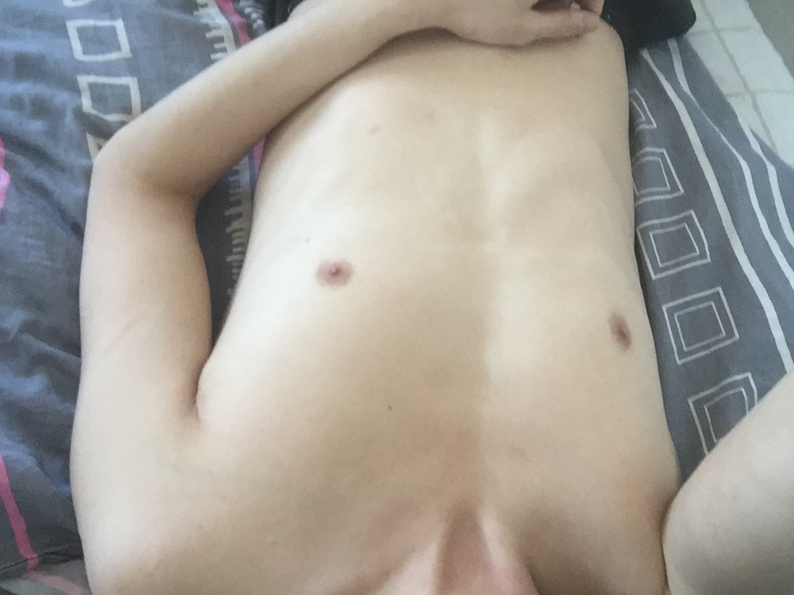
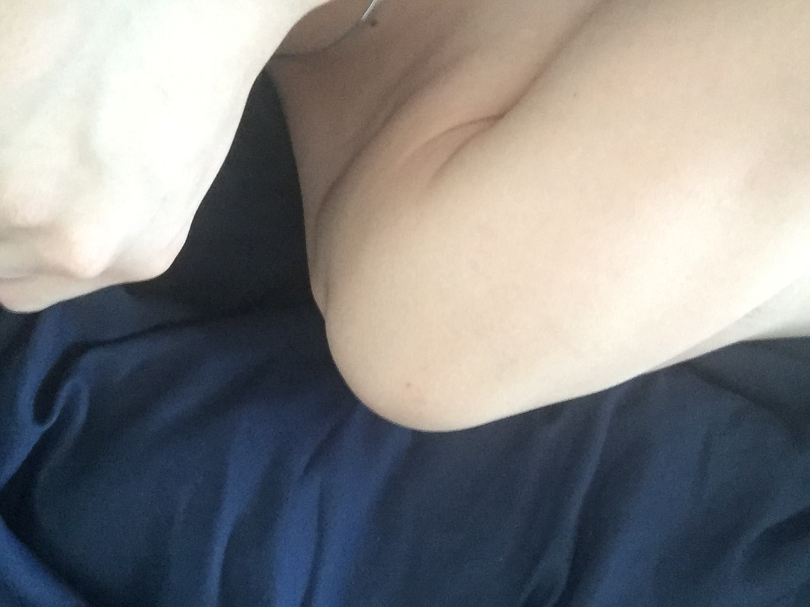
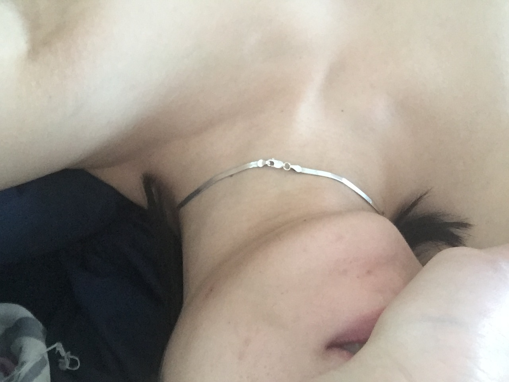

Я провалился, я опоздал, я не успел. Мной нельзя гордиться, мной нельзя любоваться, руке пизда, я хочу спать, болит сердце, болит шея, болит тело, не могу сжать кулак, ебано, мир далеко, война близко, я тут. У меня двадцать пять рублей на карте, мне ничего не светит, из задницы вернулся в жопу, меня все забыли.
Я не могу спать, мной все пользуются, я не могу уйти. хожу к врачам, хожу в магазин, хожу к врачам, хожу в магазин, курю сигареты, тушу бычки.
Никто это не прочитает, уже в меру насрать. Хочу спать. Не хочу быть таким, но меня никто не спрашивал. Уснул, встал. Есть еще минут 20, пока начнет ломить. Иду за сигаретами, ломит. Миннесота, которой не существует, грязный асфальт, алкомаркет «Москва», мне тут ни разу не продали в долг.
Пришел, я отошел, свернул направо, прошел через проход, зашел вовнутрь. подошел к двери, повернул ручку, открыл дверь. я внутри, внутри три человека, одна девушка, два парня. я подошел, на меня смотрят, я говорю, мне что-то говорят, я слушаю, мы говорим, мы смотрим на друг друга, я делаю вдох, я делаю выдох. спасибо. боль в ногах, не чувствую. стою, устал. присел, курю, смотрю, слушаю. телефон, пять пропущенных, похуй. все вокруг исчезли. улица. раз тележка, два, три, четыре. телефон сел, теперь меня никто не побеспокоит.
Встретил одного давно забытого человека, у нас случился какой-то диалог про то как было раньше и как больше не будет. Раньше при встрече молодые люди снимали шляпу, а теперь вытаскивают из уха наушник. Я сказал что-то, пожал руку и ушел.
одна нога, другая нога, одна нога, другая нога, одна нога, другая нога, одна нога, другая нога, одна нога, другая нога, одна нога, другая нога, одна нога, другая нога, одна нога, другая нога, одна нога, другая нога.
На единственных найденных джинсах, купленных за две тысячи рублей пятно, которое я так и не смог отмыть, которая будет напоминать о том дне, когда мне неправильно написали имя на кофе.
Споткнулся об яму на асфальте, обронил пачку сигарет и увидел свое ебло на лице на луже, то есть в яме и не захотел жить.
Не принимай жизнь слишком серьезно, ты никогда не выберешься из нее живым. Хорошо. Кажется, что я в другом мире, где всё вокруг сплошное наебалово. Правда.
……..Нет сил писать это дерьмо.
Спокойной ночи.
еще текст
еще текст


